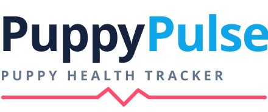
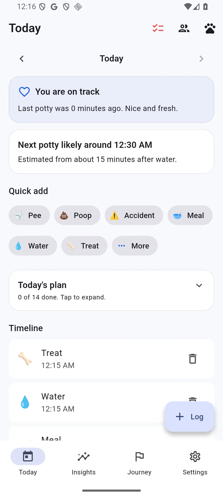
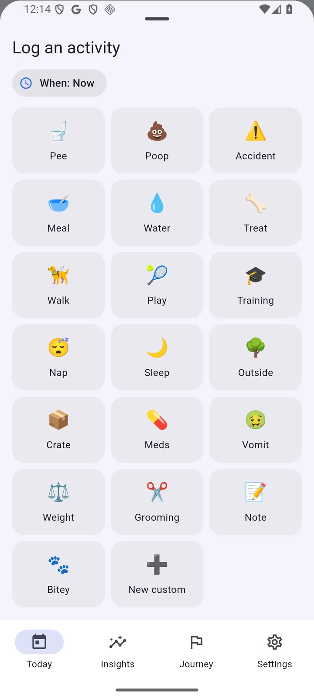
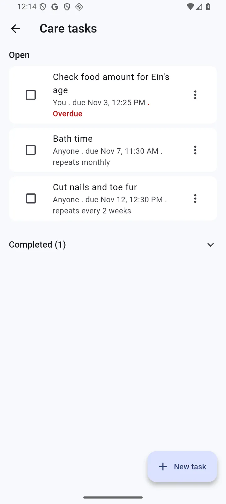
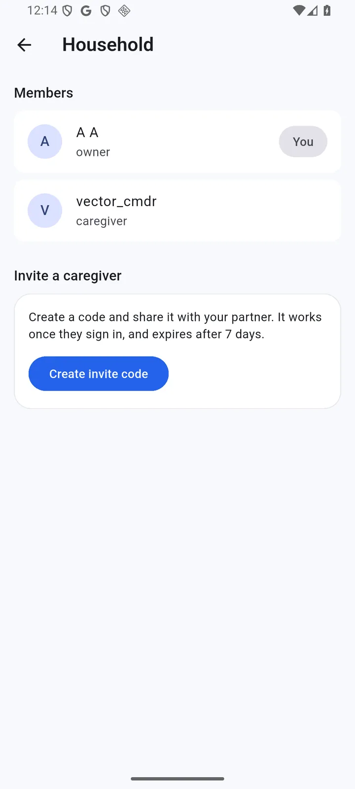
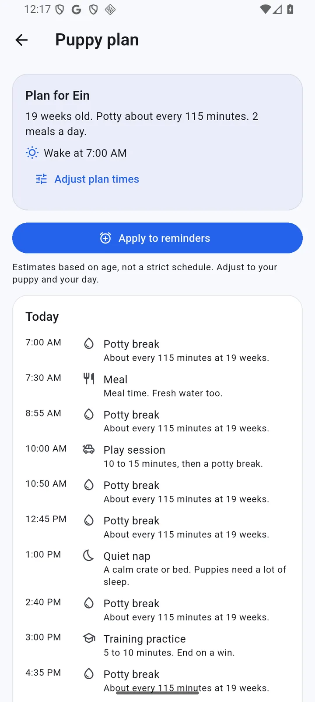
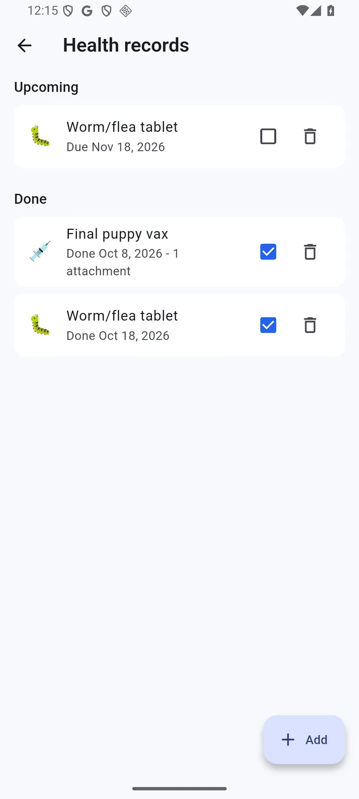
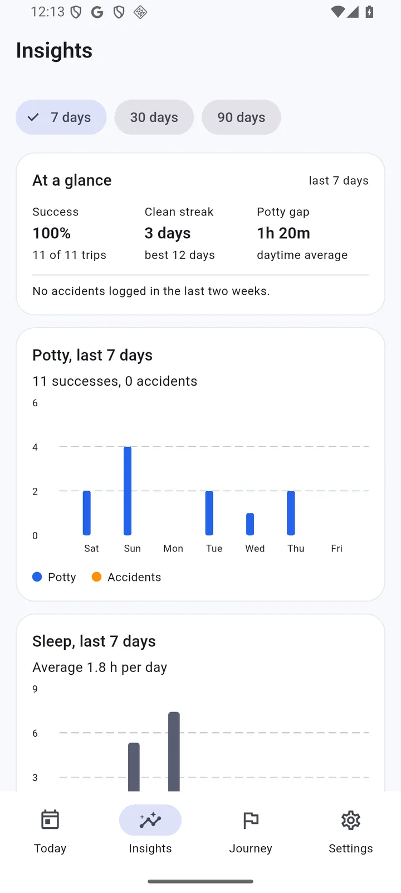
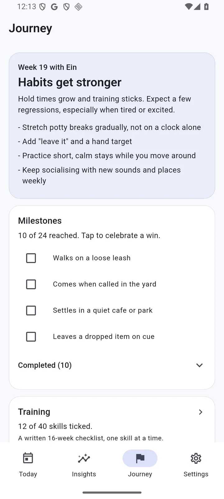

Home screen widget
Last potty, today's counts and the next estimate, with one-tap Pee, Poop, Meal and Nap. Four styles to match your wallpaper.

Keep the basics in one place: potty, meals, naps, walks, health and training. Log it in a tap, share it with your household, and stop wondering whether it was ten minutes or two hours ago.
Coming to Google Play on 11 November Android
Potty, poop, accidents, meals, water, treats, naps, walks, training, crate time, meds, and more. Backdate an entry, add a note, or attach a photo that stays on your device unless you choose to sync it.

Invite your partner or puppy sitter and everyone sees the same timeline, live. Hand off chores like washing the food bowls, leave them open for anyone, or set them to repeat on a schedule. An overdue task gets a quiet red flag on Today, and a due-time notification opens the task it is about.


Every day starts with a calm, age-based plan: potty breaks, meals, a nap, play, training and wind down. Log as you go and the plan ticks itself off. A gentle estimate tells you when the next potty is likely, based on your puppy's age and what just happened. Not sure how often to take them out? Try the puppy potty schedule calculator.

Keep vaccinations, deworming, vet visits and medications in one place, with dates you can backfill from before the app existed. Medication schedules show the next dose and log it in a tap.

Potty success, accidents, sleep and weight across 7, 30 or 90 days, with clean-day streaks and week-over-week changes. Then a growth journey that meets your puppy where they are, from the first night home to the second birthday.


Last potty, today's counts and the next estimate, with one-tap Pee, Poop, Meal and Nap. Four styles to match your wallpaper.
40 written skills across eight categories, from first potty outside to a calm crate. Potty is free; the rest is Premium.
One photo per stage, month by month to two years, then a memory book PDF you can share. Premium.
Pick the care log, health, milestones, training and tasks, add a date range, and get clean CSVs plus a branded PDF. Premium.
A slate palette for late-night feeds and 3 AM potty runs, with the same calm layout.
Milestone wins, task handoffs and a partner's late meal show up quietly on the household's phones.
PuppyPulse does not show advertising and never collects the advertising identifier.
Pet and event photos stay on your device by default, and are never used for advertising. Cloud photo sync is opt-in, and health attachments upload only when you add them.
Every estimate and suggestion is deterministic and rule-based. Your data is never used to train models.
Premium is a one-time unlock, not a subscription. The price is shown in Google Play.
Everything you need for one puppy.
Pay once, yours forever.
Premium unlocks this account only. Other household members keep the free tier unless they unlock Premium too. Older logs are never deleted; free simply shows the last 30 days.
No. Premium is a single purchase, once. There is no monthly or yearly plan, and no auto-renewal.
No. Sharing the timeline, tasks and reminders is part of the free tier. Premium unlocks extra features on the account that buys it; other members keep the free tier.
Pet and event photos are stored on your device by default. Event photo sync is opt-in and Premium. Health attachments upload only when you add them, and only members of your household can open them.
Nothing is deleted. Free shows the last 30 days; Premium opens the full history, including everything you logged before you upgraded.
PuppyPulse comes to Google Play on 11 November, for Android phones. The home screen widget is Android-only. An iPhone version is planned for later.
In the app: Settings, then Delete account. You can also email us at contact@puppypulse.xyz. See Delete your account for what is removed.